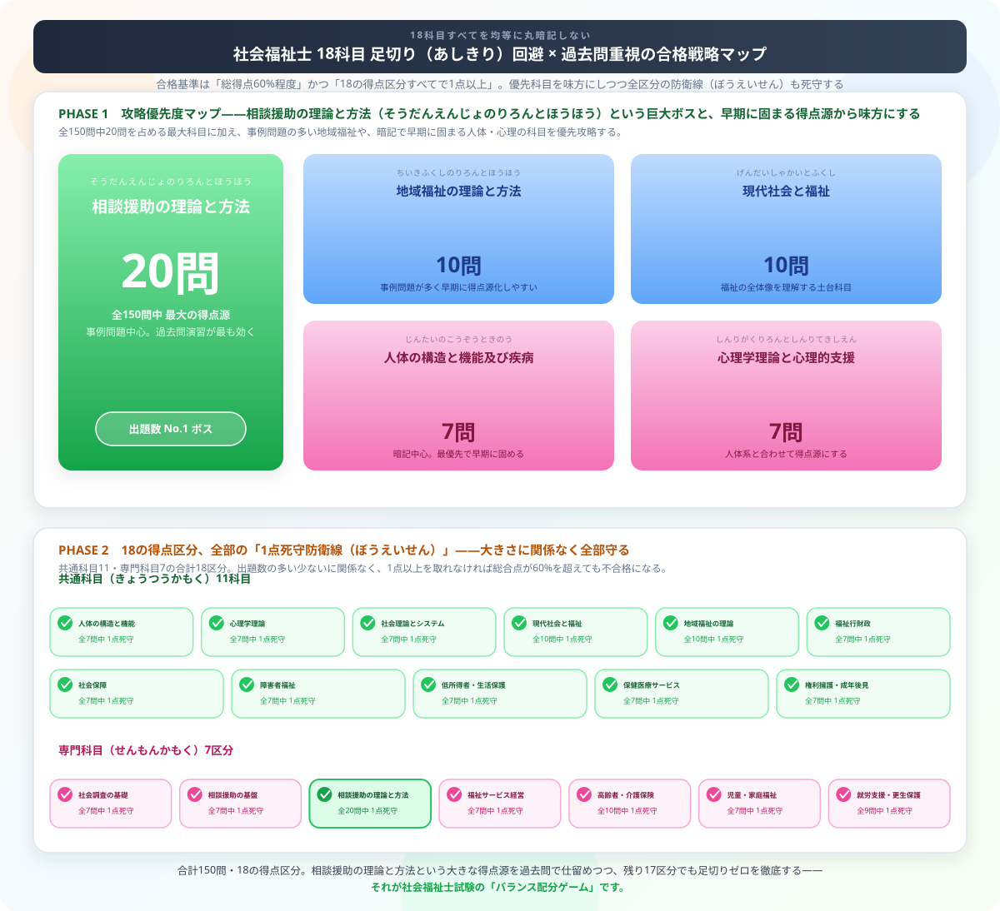

社会福祉士の独学合格ガイド【2026年版】勉強法・スケジュール・おすすめテキスト
こんにちは、大谷です。「相談援助のプロ、社会福祉士を目指そう！」と決意して、いざテキストを開いた瞬間……「うわっ、なんじゃこりゃ、筆記が18科目もある上に、1科目でも0点ならその時点で即不合格って無理ゲーじゃん！範囲広すぎて頭パンクするわ！」とフリーズしていませんか？（笑）その気持ち、痛いほど分かります。
毎日重い法律や数字の猛勉強と格闘している僕の視点から、この広大な18科目の海をゲーム感覚でサクッと切り崩し、確実に合格をもぎ取るための【全科目1点死守・独学逆算スケジュール】を優しくナビゲートします！
読み終わったら、記事末尾の【いいねボタン】をポチッと押してもらえると、執筆のモチベーション維持にめちゃくちゃ繋がります！
社会福祉士は福祉・相談援助の国家資格で、医療・行政・NPOなど幅広い現場で活躍できます。合格率は約30%と決して高くありませんが、科目ごとの対策を積み重ねれば独学合格は十分可能です。本記事では試験の全体像から効率的な勉強法まで解説します。
社会福祉士試験の基本情報
| 項目 | 内容 |
|---|---|
| 試験日 | 毎年2月上旬（筆記） |
| 合格率 | 約28〜32% |
| 試験科目 | 18科目（共通科目+専門科目） |
| 問題数 | 150問（五肢択一） |
| 試験時間 | 240分 |
| 合格基準 | 総得点の60%程度＋各科目1点以上 |
| 必要勉強時間 | 300〜500時間 |
18科目の特徴と攻略優先度

社会福祉士試験は共通科目11区分と専門科目7区分の合計18の得点区分に分かれており、相談援助の理論と方法（全20問）が最大の出題ボリュームを持つ科目です。それぞれのハコで「最低1点」を確保しつつ、出題数の多い科目から優先的に攻略するのが合格への近道です。
| 科目グループ | 科目例 | 難易度 | 攻略のコツ |
|---|---|---|---|
| 人体・心理系 | 人体の構造と機能、心理学 | ★★ | 暗記中心。早期に固める |
| 社会福祉基礎 | 社会福祉の原理、相談援助 | ★★★ | 出題数多い。最重要 |
| 法制度系 | 社会保障、公的扶助 | ★★★ | 法改正に注意。最新版テキスト必須 |
| 地域・環境 | 地域福祉、環境と福祉 | ★★ | 事例問題が多い |
| 権利擁護 | 権利擁護と成年後見 | ★★ | 法律知識が問われる |
| 実習・演習系 | 相談援助演習、実習指導 | ★ | 実践的。得点源にしやすい |
独学6ヶ月合格スケジュール
| 時期 | 内容 | 目標 |
|---|---|---|
| 1〜2ヶ月目 | テキスト通読・全体像把握 | 18科目の構造を理解 |
| 3〜4ヶ月目 | 科目別問題集・弱点洗い出し | 各科目2点以上安定 |
| 5ヶ月目 | 過去問5年分を繰り返す | 正答率70%以上 |
| 6ヶ月目 | 模擬試験・苦手科目の最終強化 | 150問を240分で解く練習 |
おすすめテキスト・参考書
| 書籍 | 特徴 | こんな人に |
|---|---|---|
| 中央法規「社会福祉士受験ワークブック」 | 定番・解説が丁寧 | 基礎から学びたい |
| ユーキャン「社会福祉士速習レッスン」 | 図解多め・読みやすい | 初めて受験する人 |
| 「社会福祉士国試模擬問題集」（中央法規） | 本番形式・解説詳細 | 仕上げ段階 |
科目ゼロ点を防ぐ弱点対策法
- 苦手科目を特定する：過去問を解いて正答率が50%以下の科目をリストアップ
- 最低2点を確保する戦略：苦手科目は「全滅しない」ことを目標に、頻出テーマに絞る
- 法改正情報を追う：介護保険法・生活保護法等は毎年改正があるため最新テキストを使う
- 事例問題は設問の構造を理解：価値観・倫理・相談援助プロセスを理解すると解きやすくなる
独学 vs 通信講座の選び方
| 方法 | 費用 | 合格率目安 | 向いている人 |
|---|---|---|---|
| 完全独学 | 2〜3万円 | 20〜25% | 自己管理できる・時間がある |
| 通信講座 | 5〜10万円 | 35〜45% | 効率よく学びたい・仕事しながら |
| 専門学校 | 30万円〜 | 50〜60% | 確実に合格したい |
まとめ
- 18科目すべてで1点以上取ることが絶対条件
- 勉強時間の目安は300〜500時間（6〜8ヶ月）
- 過去問5年分を3周することが合格への近道
- 法改正情報を追うために最新版テキストを使う
- 苦手科目は「ゼロ点回避」を目標に最低限の対策を
18科目という広大な範囲に立ち向かいながら、いつか誰かの相談に寄り添い、その人生を支えるプロになるためにここまで読んでくださったあなたに、心からのリスペクトを伝えたいです。範囲の広さに圧倒されて当然の試験だからこそ、全部を丸暗記しようとせず、配点の大きい科目から味方につけて、18科目すべてで1点死守という防衛線を絶対に死守しましょう。
この記事が少しでも「これならいけそう」と思える助けになったなら、この下にある【いいねボタン】をポチッと押してもらえると、執筆のモチベーション維持に本当に励みになります。同じ「猛勉強と格闘する仲間」として、心から応援しています！